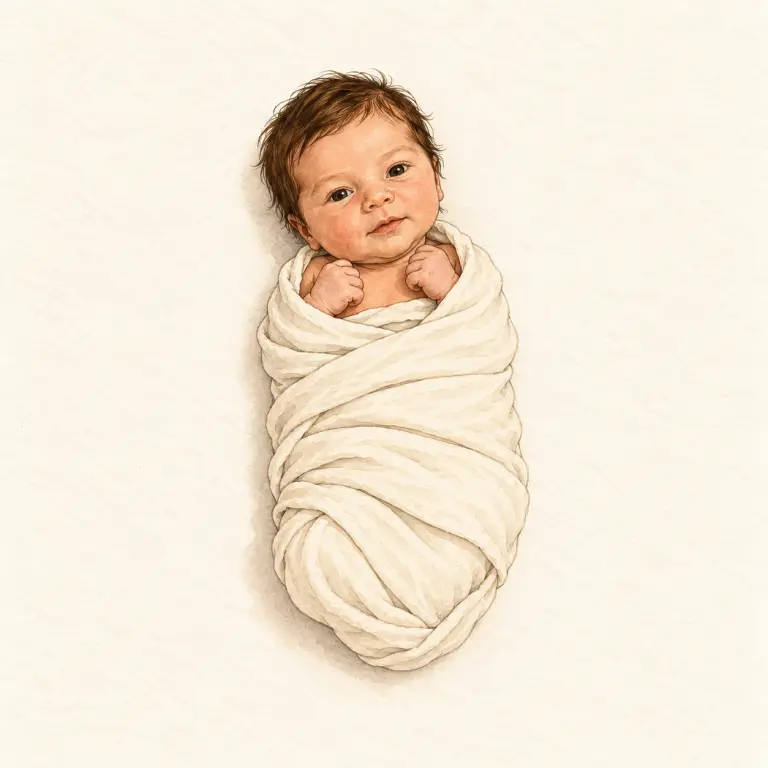
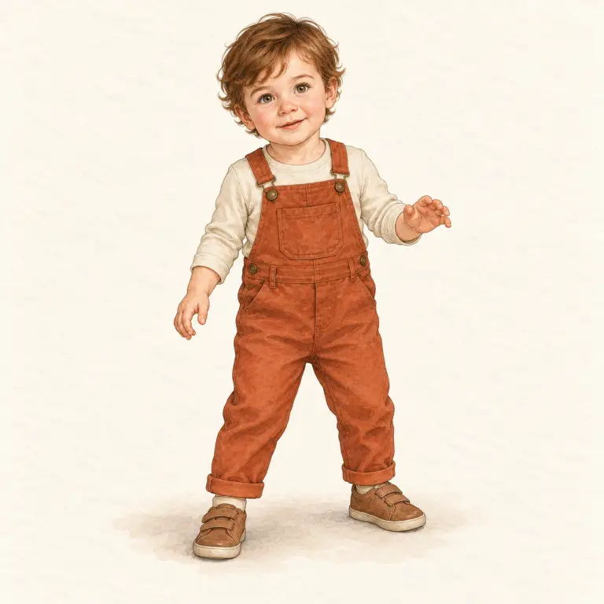
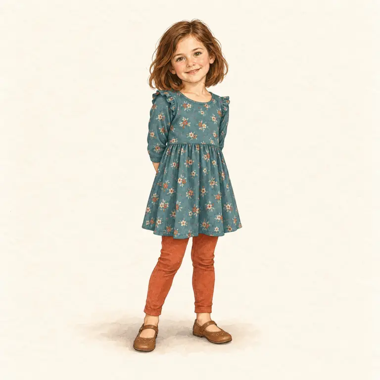
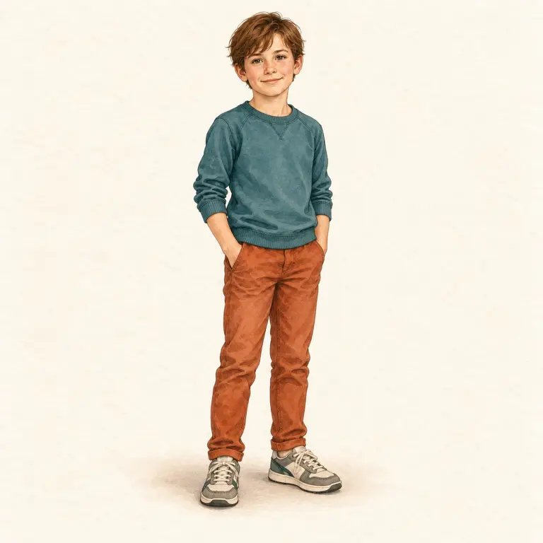
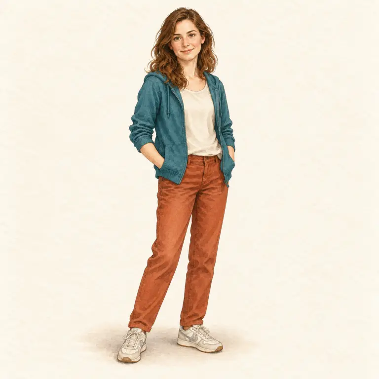
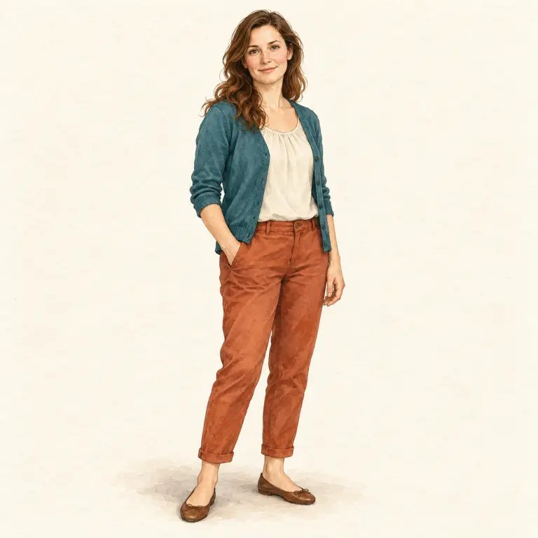
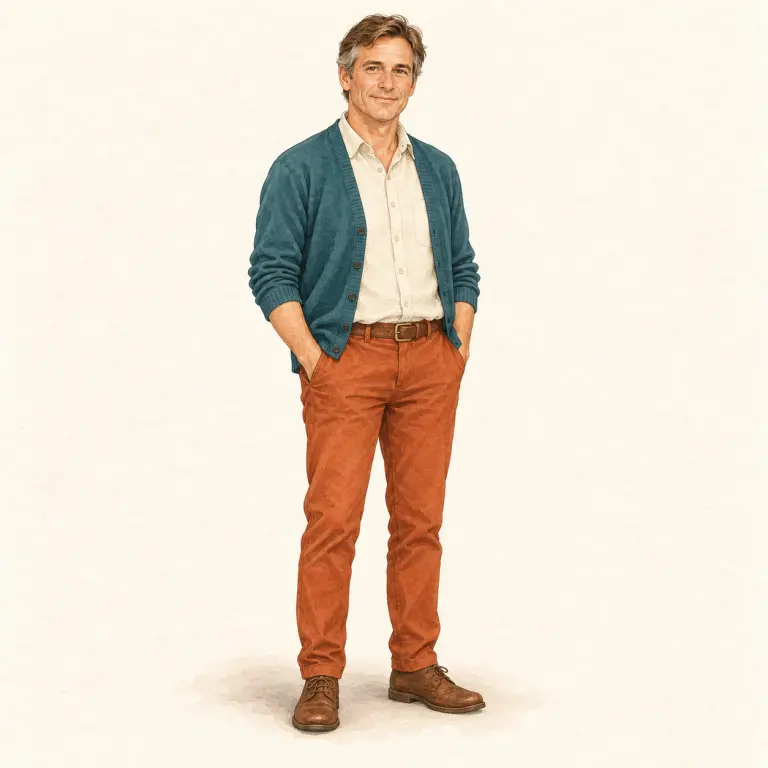
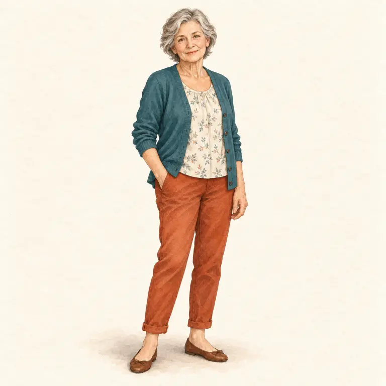

Začni výběrem bodu
Pomocí klávesy Tab projdi orgány v obrázku a potvrď Enterem nebo mezerníkem.
Pro 8. ročník: rozmnožovací soustava, vývoj před narozením a etapy lidského života.
Přepni schéma a vyber očíslovaný bod. Barvy jsou zjednodušené; obrázek slouží k orientaci, ne jako skutečný preparát.
Pomocí klávesy Tab projdi orgány v obrázku a potvrď Enterem nebo mezerníkem.
Porovnej tělesné proporce a seřaď životní etapy od narození po stáří.








Nový jedinec vzniká oplozením – splynutím vajíčka a spermie. Vývoj v děloze trvá přibližně 9 měsíců (40 týdnů). V dospívání řídí tělesné změny pohlavní hormony.